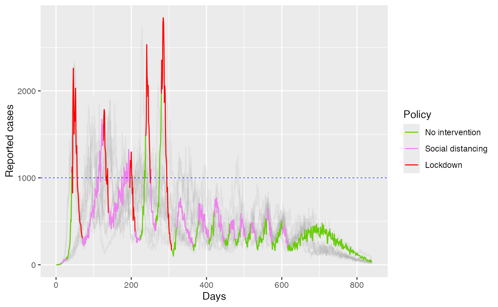

Use EpiControl with compartmental models
Sandor Beregi
2026-03-27
compartmental.RmdOverview
We will use the MPC algorithm with an SVIR model (SIR with vaccination), where we apply interventions reducing the transmission rate. Projections to evaluate the cost function are still made using a renewal model.
SVIR model description
We consider an event-based, stochastic compartmental SVIR epidemic model with four population groups:
- S: susceptible individuals
- V: vaccinated individuals
- II: infectious individuals
- R: recovered individuals
The total population size is fixed:
\[ N = S(t) + II(t) + R(t) + V(t). \]
The model assumes that susceptible individuals may either become vaccinated or infected. Infectious individuals recover at a constant per-capita rate. The vaccine provides full immunity (vaccinated individuals never get infected).
We introduce the model equations with the equilvalent (deterministic) ordinary differential equation system:
\[ \frac{dS}{dt} = - \lambda(t) S - \nu S \]
\[ \frac{dII}{dt} = \lambda(t) S - \gamma II \]
\[ \frac{dR}{dt} = \gamma II \]
\[ \frac{dV}{dt} = \nu S. \]
This means that:
- susceptible individuals leave \(S\) through either infection or vaccination,
- newly infected individuals enter \(II\),
- infectious individuals recover into \(R\),
- vaccinated individuals move into \(V\).
Stochastic event interpretation
In our implementation, infection, vaccination, and recovery are represented as event-driven transitions over each time step \(dt\). For susceptible individuals, infection and vaccination compete as alternative events, while recovery acts on the infectious compartment. The realised changes in each compartment are then aggregated into the state update.
The model records the following event counts at each step:
- Infections
- Vaccinations
- Recoveries
and the change of the compartment populations are given by
\[ \Delta S = -\text{Infections} - \text{Vaccinations} \] \[ \Delta V = \text{Vaccinations} \] \[ \Delta II = \text{Infections} - \text{Recoveries} \]
\[ \Delta R = \text{Recoveries} \]
Initialisation
library(EpiControl)
library(VGAM)
library(parallel)
library(pbapply)
library(zoo) # For rolling sum operations
library(dplyr)
library(ggplot2)
set.seed(1)Let’s define model and surveillance noise parameters.
Epi_pars <- data.frame(
Pathogen = c("COVID-19"),
R0 = c(2.8),
sigma = c(1/6.5), #recovery rate
vaccination_rate = c(1/1000), #vaccination rate
gen_time = c(6.5), # for the renewal model used in projections
gen_time_var = c(6.5), # for the renewal model used in projections
CFR = c(0.0132), # case fatality ratio
mortality_mean = c(10.0), # mean time from infection to death (for renewal model projections)
mortality_var = c(1.1) # mean time from infection to death (for renewal model projections)
)
Noise_pars <- data.frame(
repd_mean = 10.5, # Reporting delay mean
del_disp = 5.0, # Reporting delay variance
ur_mean = 0.3, # Under-reporting mean
ur_beta_a = 50.0 # Beta distribution alpha for under-reporting
)
Action_space <- data.frame(
NPI = c("No restrictions", "Social distancing", "Lockdown"),
R_coeff = c(1.0, 0.5, 0.2),
R_beta_a = c(0.0, 5.0, 5.0),
cost_of_NPI = c(0.0, 0.03, 0.15)
)
C_target <- 1000
D_target <- 12
r_trans_len <- 7
sim_settings <- list(
ndays = 120 * 7, #simulation length
start_day = 1,
N = 5e6, # population size
I0 = 10, # initial infections
C_target = C_target, #target cases
C_target_pen = C_target*5, #overshoot penalty threshold
R_target = 1.0,
D_target = D_target, #one way to get peaks at 400 is to increase this to 15
D_target_pen = 50, #max death
alpha = 1.3/C_target, #~proportional gain (regulates error in cases) covid
#alpha = 3.25/C_target #~proportional gain (regulates error in cases) ebola
alpha_d = 0*1.3/D_target,
ovp = 5.0, #overshoot penalty
dovp = 0*10.0, #death overshoot penalty
gamma = 0.95, #discounting factor
n_ens = 10L, #MC assembly size for 4
sim_ens = 10L, #assembly size for full simulation
rf = 14L, #days 14
R_est_wind = 5L, #rf-2 #window for R estimation
susceptibles = 0,
pred_days = 21L,
r_trans_steep = 0.5, # Growth rate
r_trans_len = r_trans_len, # Number of days for the transition
t0 = r_trans_len / 2, # Midpoint of the transition
pathogen = 1,
susceptibles = 0,
delay = 1,
ur = 1,
r_dir = 2
)Model definition
Let’s create the compartments and define flows. For simple transitions between compartments we use the ‘event’ function, whereas for competing events (infection and vacciantion for susceptible individuals) we will use the ‘branch’ function.
# Create the compartments
model_pars <- list(
beta = Epi_pars$R0 * Epi_pars$sigma,
recov_rate = Epi_pars$sigma,
vac_rate = Epi_pars$vaccination_rate
)
flow_SVIR <- function(t, state, pars, dt) {
with(as.list(state), {
N <- S + II + R + V
inf_rate <- pars$beta * II / N
vac_rate <- pars$vac_rate
# Events
Inf_and_vac <- event(S, inf_rate+vac_rate)
II_and_VV <- branch(Inf_and_vac, inf_rate/(inf_rate+vac_rate))
Infections <- II_and_VV[1]
Vaccinations <- II_and_VV[2]
Recoveries <- event(II, pars$recov_rate)
delta <- c(
S = -Infections - Vaccinations,
II = Infections - Recoveries,
R = Recoveries,
V = Vaccinations
)
attr(delta, "events") <- c(
Infections = Infections,
Vaccinations = Vaccinations,
Recoveries = Recoveries
)
delta
})
}
# ---- wire it up ----
S <- new_compartment("S", 6000000)
V <- new_compartment("V", 0)
II <- new_compartment("II", 40)
R <- new_compartment("R", 0)
model <- build_model(S, V, II, R) |> set_flows(flow_SVIR)Let’s add the events/calculated variables (e.g. reproduction number estimates) we’d like to export and track to restuls (either for control purposes or for plotting later, otherwise only compartments and flows are recorded by default.) We also set up episim_data_ens: the dataframe where we will store our results.
event_names <- c("Infections", "Vaccinations", "Recoveries")
track_R <- c("Re","Rew","Rest","R0est","policy","R_coeff","I","C","Lambda","Lambda_C")
comp_names <- names(state(model)) # e.g. S IR ID R D
model$events
#> NULL
column_names <- c("day","sim_id", comp_names, event_names, track_R)
episim_data <- data.frame(matrix(0, nrow = (sim_settings$ndays), ncol = length(column_names)))
colnames(episim_data) <- column_names
episim_data$policy <- rep(1, sim_settings$ndays)
episim_data$days <- 1:(sim_settings$ndays)
st0 <- state(model)
episim_data[1, comp_names] <- as.numeric(st0[comp_names])
episim_data[1, "Re"] <- Epi_pars[1, "R0"]
episim_data[1, "Rew"] <- Epi_pars[1, "R0"]
episim_data[1, "R0est"] <- Epi_pars[1, "R0"]
episim_data[1, "Rest"] <- Epi_pars[1, "R0"]
episim_data[1, "I"] <- 1
episim_data_ens <- replicate(sim_settings$sim_ens, episim_data, simplify = FALSE)
for (ii in 1:sim_settings$sim_ens) {
episim_data_ens[[ii]]$sim_id <- rep(ii, sim_settings$ndays)
}Simulation
Let’s define the simulation settings
episettings <- list(
sim_function = Epi_MPC_run_comp_model,
model = model,
incidence_flow = "Infections",
transimssion_par = "beta",
event_names = event_names,
reward_function = reward_fun_wd,
R_estimator = R_estim,
noise_par = Noise_pars,
epi_par = Epi_pars,
model_par = model_pars,
actions = Action_space,
updatepars <- function(pars, ctx) pars,
pars_to_change <- character(0),
sim_settings = sim_settings,
parallel = FALSE
)In the list above updatepars and pars_to_change define how interventions change transmission. De default setting for this is null, i.e. if unchanged, interventions will not change anything. This is not what we want, therefore we will define our custom function where the transmission parameter is reduced according to R_coeff.
episettings$updatepars <- function(pars, ctx) {
R0 <- ctx$epi_par[ctx$pathogen, "R0"]
sigma <- ctx$epi_par[ctx$pathogen, "sigma"]
dyn_beta <- R0 * ctx$Rcoeff * sigma
modifyList(pars, list(
beta = dyn_beta
))
}Now we run the simulation.
# Ensure actions$cost_of_NPI is numeric
Action_space$cost_of_NPI <- as.numeric(as.character(Action_space$cost_of_NPI))
# Verify numeric parameters in sim_settings
numeric_params <- c("alpha", "alpha_d", "ovp", "dovp", "C_target", "C_target_pen", "D_target", "D_target_pen", "pred_days", "sim_ens", "ndays", "N")
sim_settings[numeric_params] <- lapply(sim_settings[numeric_params], as.numeric)
#Set this up for parallel run
# Create and export cluster
Ncores <- 2 # Adjust cores as appropriate
cl <- makeCluster(Ncores)
clusterExport(cl, ls())
clusterExport(cl, c("reward_fun_wd", "Epi_pred_wd", "Epi_MPC_run_wd", "episim_data_ens", "episettings", "Action_space", "Epi_pars", "Noise_pars", "R_estim"))
parallel::clusterEvalQ(cl, {
library(pbapply)
library(VGAM)
library(EpiControl)
})
#> [[1]]
#> [1] "EpiControl" "VGAM" "splines" "stats4" "pbapply"
#> [6] "stats" "graphics" "grDevices" "utils" "datasets"
#> [11] "methods" "base"
#>
#> [[2]]
#> [1] "EpiControl" "VGAM" "splines" "stats4" "pbapply"
#> [6] "stats" "graphics" "grDevices" "utils" "datasets"
#> [11] "methods" "base"
episettings$parallel <- TRUE
episettings$cl <- cl
# Run the epicontrol function
results <- epicontrol(episim_data_ens, episettings)
#> [1] 0
#> | | | 0%
# Stop the cluster after simulation
parallel::stopCluster(cl)Results
Plot the results
# Combine Simulation Results
combined_data <- do.call(rbind, results)
combined_data <- combined_data %>%
group_by(sim_id, policy) %>%
arrange(days) %>%
mutate(group = cumsum(c(1, diff(days) != 1))) %>%
ungroup()
combined_data <- combined_data %>%
arrange(sim_id, days, policy)
policy_labels <- c("1" = "No intervention", "2" = "Social distancing", "3" = "Lockdown")
ggplot(combined_data %>% filter(sim_id == 1)) +
geom_line(data = subset(combined_data, sim_id != 1), aes(x = days, y = C, color = as.factor(sim_id)), alpha = 0.1) +
geom_line(aes(x = days, y = C, color = factor(policy, labels = policy_labels), group = 1), alpha = 1.0) +
geom_line(aes(x = days, y = C, color = factor(policy, labels = policy_labels), group = 1), alpha = 1.0, linewidth=0.25) +
geom_hline(yintercept = C_target, linetype = "dashed", color = "blue", linewidth=0.25) +
labs(x = "Days", y = "Reported cases", color = "Policy") +
scale_color_manual(values = c("No intervention" = "chartreuse3", "Social distancing" = "violet", "Lockdown" = "red")) +
guides(color = guide_legend(title = "Policy"))